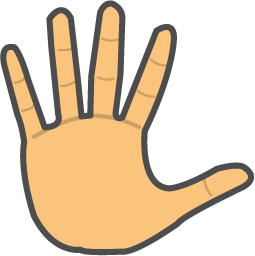
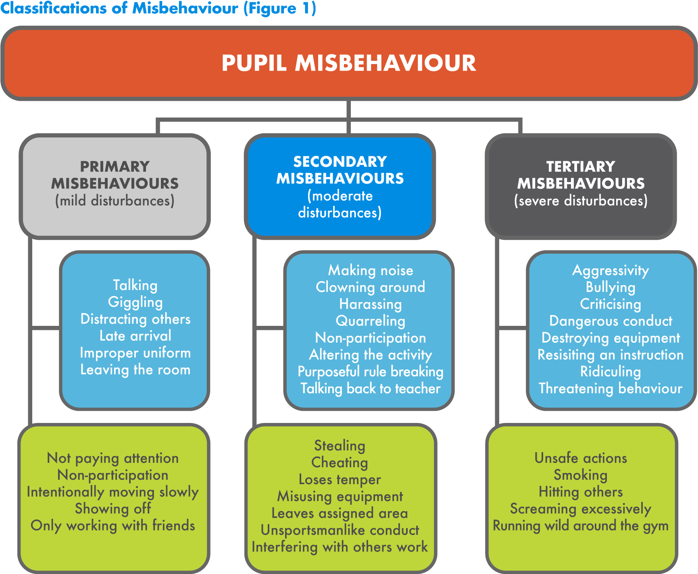
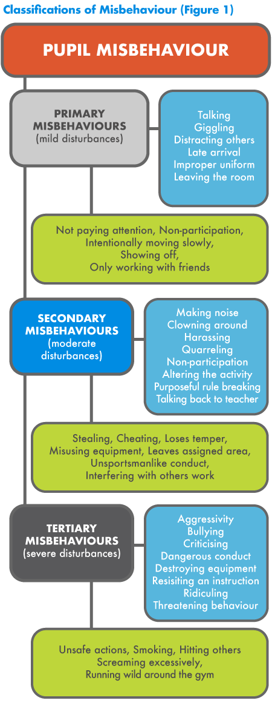
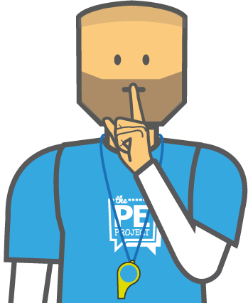
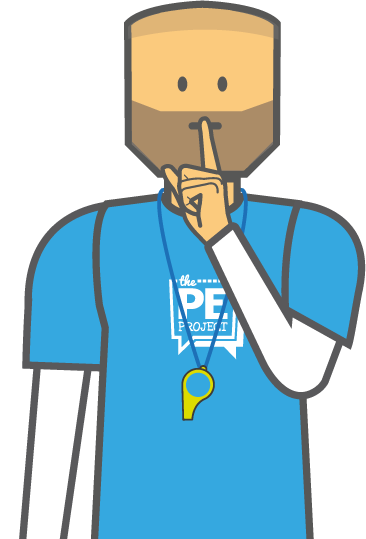
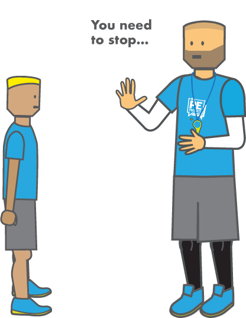
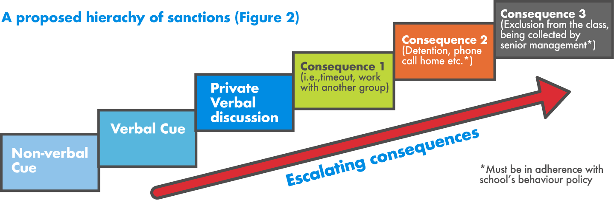
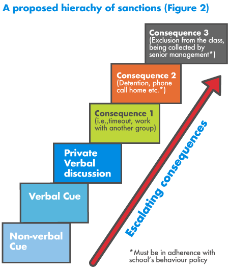
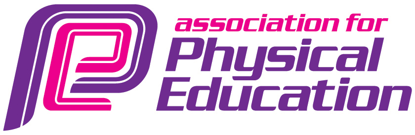

Student misbehaviour is consistently regarded as one of the biggest concerns and challenges for PE teachers, especially trainees and NQTs. Fortunately we are not alone, as schools and educators from around the world have shared their struggles and noted how poor behaviour significantly impairs class progress.

Pupil misbehaviour distracts both teachers and pupils from a learning focus, which has resulted in teachers having to spend more time on behaviour management rather than student learning. In 1979, Sieber estimated the average teacher reacts to behaviour problems approximately 87 times a day, or 16,000 times a year, which is likely similar in today’s schools or potentially worse. Subsequently, the challenge of managing behaviour has been described as the “most distressing aspect of the profession” (Gal, 2006, p.377), and contributes to teacher dissatisfaction, stress, burnout, and early retirement from the profession. As a result, it has been suggested that many heads of schools tend to employ teachers predominantly on their ability to manage behavioural problems. Therefore, it is invaluable for physical educators to clarify the different classifications of misbehaviour and to have a repertoire of behaviour management tools [1-6].
In schools, teachers have been expected to encounter a wide range of misbehaviours, which are largely similar for both classroom and physical education lessons. The most troublesome and frequently occurring misbehaviours are relatively mild but repetitive disturbances which have a disruptive influence on the class, these include talking, distracting others, and late arrival. Whereas, the more severe disturbances are less common but equally important, “as even one case of these types of incidents is one too many” (Krech et al, 2010). These include aggressive behaviour, bullying and dangerous conduct, which may be harder to detect as they are likely to be shielded by pupils. In PE lessons, the reported misbehaviour of pupils is largely similar, but possesses a slightly more extensive list due to the physical nature of the subject [6-10]. For the purpose of clarity, students’ misbehaviours in general lessons and physical education were compiled from literature to produce a diagram, ranging from mild to severe disturbances [see Figure 1].


For dealing with these misbehaviours, a range of models and standard techniques can be found in behaviour management texts, which encourage proactive planning, excellent management skills, and positive interpersonal relationships. Proactive planning requires teachers to provide pupils with structured lessons, which begins with the establishment of clear expectations, rules and routines, followed by the production and implementation of well-planned and well-presented lessons which are individualised to the needs and interests of the students. In research by educators, pupils’ academic achievement and attitude has been linked with the establishment of clear expectations, rules and routines by teachers at the beginning of the school year. Thus, teachers are recommended to clearly state their expectations for students during the first few lessons of the year, clarifying any possible misunderstandings, and the consequences of misbehaviour [5-12].
There are many ways to go about establishing expectations for your class. However, a very simple set of expectations that encompass all types of behaviour, are:
- Respect for others and equipment
- Listen carefully to instructions and follow them quickly
- Try your best at all times
This should be one of the first things to go through with your classes at the beginning of the very first lesson, and should be revisited throughout the school year as needed (particularly after an extended break or with younger students).
In addition, the development of rules and routines during the initial lessons will provide students with consistent expectations for how your PE lessons will start and finish, from lining up, getting changed and the procedures for handling and storing equipment, which all contribute greatly to class control [5, 7, 12].
Good management skills (in combination with proactive planning) has been identified as an effective approach for handling primary misbehaviours of a repetitive nature, and is composed of non-verbal and verbal cues. Non-verbal cues are a non-intrusive, non-confrontational strategy which has been highlighted as an essential management tool for teachers to possess, as it is unlikely to cause any negative effects. Examples of non-verbal cues includes the use of physical proximity, maintaining eye contact, the teacher stare, waiting for silence, hand signals, and body language [6, 13-15].


Physical proximity involves the teacher moving into the misbehaving students’ area to convey the message that their inappropriate behaviour has been noticed. Whilst, maintaining eye contact and the teacher stare can halt misbehaviour as they illustrate to pupils the teacher’s awareness and control without disturbing the learning environment. When talking to the whole-class, it is essential to wait for silence before addressing your students, this has been acknowledged as an easily achievable non-verbal control technique, which is complimented by the use of hand signals (e.g., a finger to the lips to signal silence or a raised hand) or body language (e.g., folded arms to signal waiting and expectancy). Therefore, non-verbal cues have been recognised as subtle yet effective techniques to manage primary misbehaviours, which can help minimise noise in your lessons and reduce teacher stress [5, 12, 14, 15].
Despite the use of non-verbal cues, sometimes the simplest and most efficient approach to managing pupil misbehaviour is by asking the offending pupils to stop; this has been referred to as verbal cueing. In literature, the general consensus and guidelines for verbal cues suggests teachers remain calm and polite for all disturbances, using a positive approach to frame their correction and direction. This could be achieved by privately talking to the pupil(s) about how their behaviour was unacceptable, its impact on others, and then offering a positive alternative by clarifying the appropriate behaviour and promoting the task. Alternatively, you could start by asking pupils why they’ve been stopped and spoken to, and for them to reflect on their behaviour and if it matches the classes’ expectations.

If the situation continues and requires the pupil to be reprimanded, teachers have been recommended to depersonalise sanctions, by rejecting the behaviour, not the student, and highlighting that continued misbehaviour will force the teacher to issue a sanction whilst emphasising the pupils autonomy e.g., "If you choose to continue to behave in this way..." [5, 9, 12].
In order to maintain and develop positive interpersonal relationships with students, teachers need to be firm, consistent, and fair, demonstrating that they care about both pupil’s work and their lives inside and outside of school. This requires teachers to be accepting, confident, caring, relaxed, in control, professional, humorous, in charge of the class, inspiring, encouraging, and passionate about their subject. If teachers adopt these characteristics, use good management skills and proactively plan their lessons a foundation of control and discipline will be established in lessons. If forced to sanction a student, literature strongly opposes the use of coercive and aggressive disciplinary strategies, such as shouting, threats, exercise as punishment, criticism and sarcasm, as they have been reported to diminish a sense of responsibility, distracts pupils from learning, damages self-esteem, and can cause escalation of misbehaviour [5, 13, 16-18].
With regards to sanctioning pupils, the aforementioned micro-level strategies (non-verbal and verbal cues) are the most effective for handling primary and some secondary misbehaviours. Whilst more severe and aggressive behaviours would require macro-level guidance via the school’s behaviour policy [6, 12]. All schools are different in this area with some still permitting the use of detentions, whether during break or after school, which should be administered on the same day. Whilst others prefer a more relational approach such as restorative justice meetings where the pupil(s) involved discuss the situation in more detail in an effort to resolve the issue and prevent reoffending. This should be overseen by the Head of Department or by a member of senior management. Other strategies include phone calls home and meetings with parents to discuss their child’s behaviour and to establish a behavioural improvement plan.
When rewarding pupils, it is also advised to follow your school’s/department’s policy. However, one of the most effective forms of reward in a school has been recognised as positive comments. Which is important for fostering positive interpersonal relationships, raising pupils’ self-esteem, and reducing off-task behaviour, which includes recognising good behaviour, praising high standards of work and appropriate attitudes [12, 13, 17, 18). The best use of extrinsic rewards have been described as informational, which generally consists of the teacher providing specific and private feedback about a student’s competence at a certain task [18-19]. Other meaningful methods of rewards include e-mails or phone calls home to share student’s accomplishments, which help build a positive rapport with both pupils and parents.
If you don’t know your school’s and/or department’s policy for rewards and sanctions, make sure you grab a copy, highlight the key bits of information and pin them above your desk as a constant reminder.
Once you are familiar with your school’s behaviour policy, it is beneficial to use the Classifications of Misbehaviour (Figure 1) to establish a clear hierarchy of sanctions that are in adherence with your school’s policies and literature. For example, for initial primary misbehaviours (mild disturbances) the first step could be a non-verbal cue, the second step, an anonymous verbal cue i.e., “Still waiting on one more person!”, the third, a private verbal cue which would consist of talking quietly, yet firmly to the student about the behaviour you expect from them (you could even tell them that this is their first verbal warning). If their misbehaviour continues then decide on your next steps, maybe asking them to work with another group or alone, or to sit out for few minutes. If a student continues to choose not to follow the rules, then they have had ample opportunities to adjust their behaviour and it is now the time to use the next sanction. In your school this may be a break-time or after-school detention or a meeting with the head of department etc. Again, it is vital that you operate under the school’s behaviour management policy.
With regards to more severe misbehaviour (i.e., secondary) you will most likely jump straight to a verbal cue (first warning) or for tertiary misbehaviour a sanction such as a detention, or even being excluded from the class or being collected by a member of senior management may be best.



As a result of this literature review, the key points for effective behaviour management can be deduced to the following steps:
- Classifications of misbehaviour (primary, secondary and tertiary)
- Proactive planning (clear expectations, rules and routines, structured lessons)
- Excellent management skills (non-verbal and verbal cues)
- Positive Interpersonal Relationships (teacher characteristics)
- Rewards (specific and private feedback)
- Clear hierarchy of sanctions (in alignment with school behaviour policy)
As physical educators if we have an understanding of these aforementioned principles and actively make strides in developing our own classifications, hierarchy of sanctions, routines, lesson planning and personal skills which are tailored to our school’s ethos and policy documents then we will have laid a strong foundation of high expectations for our PE lessons. This can then be bolstered by reading up on different behaviour management strategies, reflecting and sharing best practice with colleagues and even help in the development of the school’s behaviour policy which should be a living, breathing document.

References
- Vogler, E.W. and Bishop, P. (1990) ‘Management of disruptive behaviour in physical education’ Physical Educator. 47, pp. 16-26.
- Kulinna, P.H., Cothran, D. and Regualos, R. (2003) ‘Development of an Instrument to Measure Student Disruptive Behaviour’ Measurement in Physical Education and Exercise Science. 7(1), pp. 25-41.
- Sieber, R. T. (1979) ‘Classmates as workmates: Informal peer activity in the elementary school’.
- Gal, N. (2006) ‘The role of Practicum supervisors in behaviour management education’ Teaching and Teacher Education. 22, pp. 377-393. Attendance Policy. London: DfE.
- Bailey, R. (2001) ‘Managing Behaviour’, In Teaching Physical Education: A Handbook for Primary & Secondary School Teachers. London: Kogan Page. pp. 99-116.
- Krech, P.R., Kulinna, P.H. and Cothran, D. (2010) ‘Development of a short-form version of the Physical Education Classroom Instrument: measuring secondary pupils’ disruptive behaviours’ Physical Education and Sport Pedagogy. 15(3), pp. 209-225.
- McCormack, A. (1997) ‘Classroom Management Problems, Strategies and Influences in Physical Education’ European Physical Education Review. 3(2), pp. 102-115.
- Houghton, S., Wheldall, K. and Merrett, F. (1988) ‘Classroom Behaviour Problems which Secondary School Teachers say they find most troublesome’ British Educational Research Journal. 14(3), 297-312.
- Lewis, R. (1999) ‘Teachers’ support for inclusive forms of classroom management’ International Journal of Inclusive Education. 3(3), pp. 269-285.
- Garner, P. (2009) ‘Behaviour for Learning: A positive approach to classroom management’ In Capel, S., Leask, M. and Turner, T. (eds.) Learning to Teach in the Secondary School: A Companion to School Experience. 5th edn. London: Routledge. pp. 138-154.
- Haroun, R. and O’Hanlon, C. (1997) ‘Do Teachers and Students Agree in their Perception of What School Discipline Is?’ Educational Review. 49(3), pp. 237-250.
- Cowley, S. (2003) Getting the Buggers to Behave 2. London: Continuum.
- Ellis, S. and Todd, J. (2009) Behaviour for Learning: Proactive approaches to behaviour management. Oxon: Routledge.
- Rink, J.E. (2006) Teaching Physical Education for Learning. 5th Edn. London: McGraw Hill.
- Atici, M. (2010) ‘A small-scale study on student teachers’ perceptions of classroom management and methods for dealing with misbehaviour’ Emotional and Behavioural Difficulties. 12(1), pp. 15-27.
- Department of Education and Science (DES) (1989) ‘Discipline in Schools: Report of the Committee of Enquiry Chaired by Lord Elton’ The Elton Report. London: HMSO
- Smith, R. (1995) Develop your classroom management skills. Lancaster: Framework Press Educational Publishers Ltd. pp. 1-18.
- Morgan, K., Milton, D., and Longville J. (2015) Motivating pupils for learning in PE. In Capel, S. & Whitehead, M (Ed) Learning to Teach Physical Education in the Secondary School: A Companion to School Experience. 4th Edition. London: Routledge.
- Deci, E.L. and Ryan, R.M. (1985) Intrinsic Motivation and Self Determination in Human Behaviour. New York: Plenum Press.